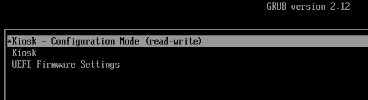
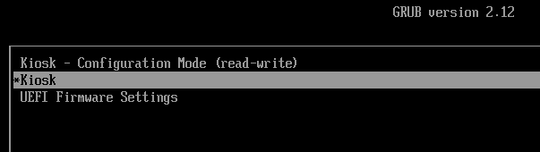

An initially configurable, ultimately locked down Chrome kiosk
Say you need a 'kiosk' -- a computer that can only do one thing: run a browser with a particular URL. Our goals are:
- The computer must boot straight into the browser, with no interaction
- There must be no other user interface
- It must not be possible to launch other apps
- There must be no persistent state. when the 'kiosk' is restarted, it must start completely fresh
- The kiosk must be robust against casual attempts at interference
Configurable at deployment
Despite being ultimately locked down and read-only, there must be a some configuration possible at deployment time. The person deploying the kiosk needs to configure the network connection (e.g. with a wifi password), display, and perhaps the URL.
So out the box, a kiosk will boot in 'Configuration Mode':

This launches a standard Gnome interface, in which the kiosk deployer may customize the kiosk URL, network settings, screensaver, display and anything else:

After configuration, the deployer reboots, and chooses the 'Kiosk' boot option:

The computer reboots in locked-down Kiosk mode.
Locked down in production
When in locked down 'kiosk' mode:
- The grub boot menu will not normally appear (unless you press Esc during boot)
- The kiosk loads in locked down mode, loading straight into the browser:
This project
KioskMaker is a set of scripts for building such a kiosk, based on AlmaLinux, and targeting x86_64 hardware capable of running Chrome. You feed the scripts a downloaded AlmaLinux .iso, and end with a raw disk image of a customized operating system, which you can write directly to the hard disk of a kiosk.
Security
KioskMaker is read-only and locked down for the sake of robustness, not security. The intention is to prevent accidental changes, rather than defend against a hostile user. Operators are assumed to have physical access, which is very hard to defend against - at a minimum one would need to:
- authenticate ethernet connections with IEEE 802.1X to prevent any laptop from being substituted for the kiosk.
- avoid hardware keyloggers (e.g. intercepting keystrokes).
- set a BIOS password to prevent Secure Boot being disabled.
- sign the bootloader (grub) and verify its integrity with Secure Boot
- implement TPM-backed dm-verity or dm-crypt to ensure the disk is not tampered with
- set an inactivity timeout after which Chrome is reset, wiping any state like remembered credentials. Currently Chrome remembers credentials until reboot.
In this documentation: